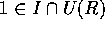
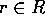
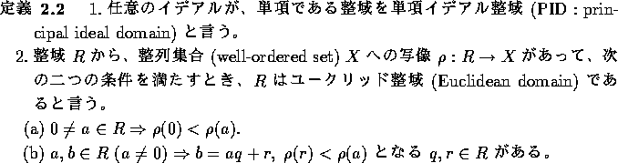

R を環とすると、加法に関しては、加群だから、加法に関する部分群 I は、すべて、正規部分群である。従って、 は加群となる。どのような条件のもとで、
は加群となる。どのような条件のもとで、 が環になるであろうか。
が環になるであろうか。
 だから、積が自然に定義できるためには、
だから、積が自然に定義できるためには、
であることが必要である。逆に、上の条件を満たせば、積が定義できる。ここで、x = 0 または、y = 0 とおくことによって、、 を満たすことが必要であることが分かる。
A、B を環 R の部分集合とするとき、これらの和および積を次のように定義する。特に、積の定義に注意。
この節の始めに見たように、I を環 R の両側イデアルで とすると、 は、
は、
と、和と積を定義する事により、 は環になる。この環を剰余環 (quotient ring) と言う。
は環になる。この環を剰余環 (quotient ring) と言う。
 ともかく。
ともかく。
I = R とすると、 より、。逆に、 とする。このとき、 とすと、
従って、。よって、I = R。
( ) I を 0 とは異なる R の左イデアルとする。 とすると、
) I を 0 とは異なる R の左イデアルとする。 とすると、 。従って、上の注より I = R。
。従って、上の注より I = R。
( )
)  とすると、 より、Ra は 0 でない左イデアルだから、仮定より 。従って、R の元 b で、ba = 1 となるものがある。特に、 だから、同様にして、R = Rb。特に、R の元 c で、cb = 1 となるものがある。すると、
とすると、 より、Ra は 0 でない左イデアルだから、仮定より 。従って、R の元 b で、ba = 1 となるものがある。特に、 だから、同様にして、R = Rb。特に、R の元 c で、cb = 1 となるものがある。すると、
だから、ab = ba = 1。よって、R の 0 以外の元は、すべて、単元である。従って、R は斜体である。
順序集合 X が、任意の空でない部分集合に最小元を持つとき、整列集合 (well-ordered set) という。

R をユークリッド整域、I を R の イデアルとする。I = 0 ならば、明らかに、単項イデアルだから、 とする。
の最小元を、 とする。ここで、 とすると、b = aq + r、 となる、 がある。 だから、a の取り方から、r = 0 を得、。b は任意だから、I = Ra、すなわち、すべてのイデアルは単項である。
とすると、b = aq + r、 となる、 がある。 だから、a の取り方から、r = 0 を得、。b は任意だから、I = Ra、すなわち、すべてのイデアルは単項である。